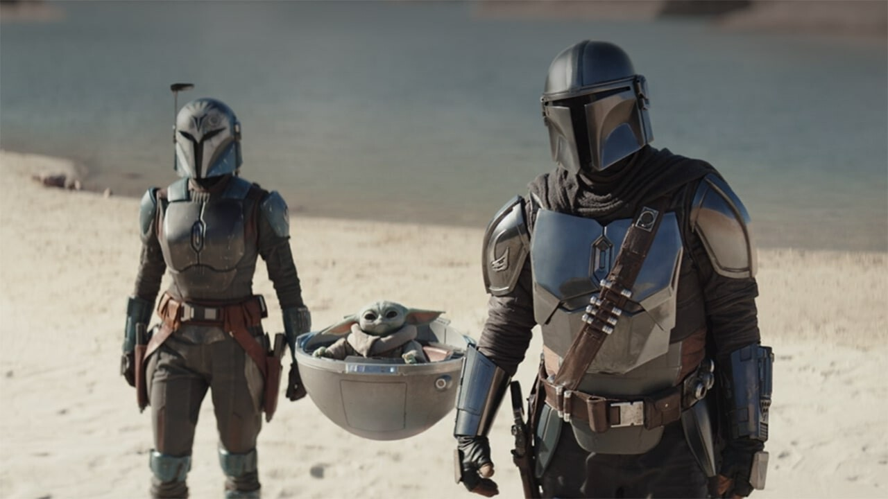
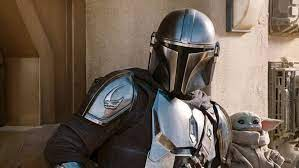
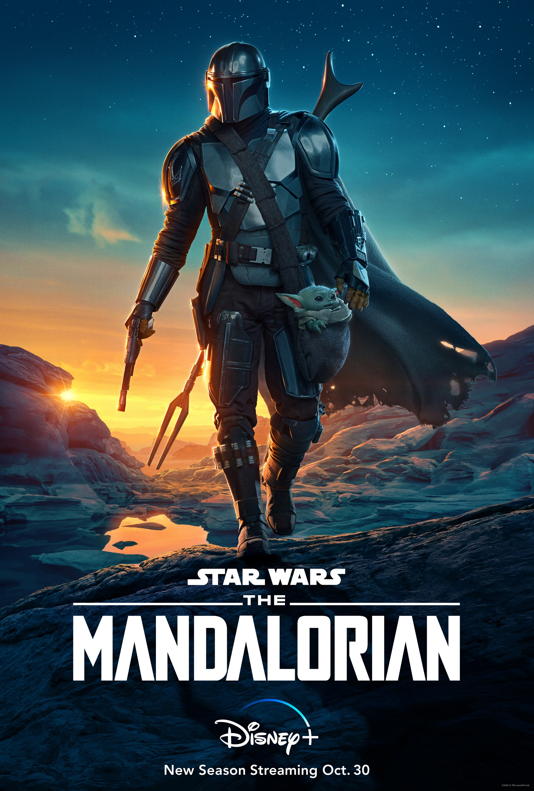

The Mandalorian es una serie de televisión que sigue las aventuras de un cazarrecompensas solitario, también conocido como "Mando", en un universo de Star Wars después de la caída del Imperio. El Mando acepta un trabajo para capturar a un objetivo, que resulta ser un niño de la misma especie que Yoda, y se convierte en su protector. La historia sigue al Mando y al niño mientras viajan a través de la galaxia y se enfrentan a una variedad de enemigos, mientras buscan un lugar seguro para el niño y descubren más sobre su pasado y su cultura Mandaloriana.
  